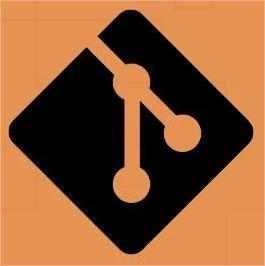

Jhonatan Hilario Braga
Olá, meu nome é Jhonatan Braga, tenho 21 anos, moro no bairro do Catete e concluí o ensino médio no Colégio Pedro II. Atuei como estagiário e auxiliar administrativo no Ministério Público, como jovem aprendiz no Grupo Pão de Açúcar e jovem aprendiz auxiliar administrativo em uma clínica Oftlamológica. Gosto muito de técnologia e busco seguir carreira na área de TI. Possuo conhecimentos nas áreas administrativa, hospitalar, atendimento ao público e informática, com foco em sistemas internos, processos operacionais e controle e organização de documentos. Tenho nível intermediário de inglês e estou em busca de uma oportunidade em uma empresa estruturada, onde eu possa aplicar minhas habilidades, contribuir com eficiência nas rotinas administrativas e crescer profissionalmente junto à equipe, com proatividade, responsabilidade e vontade de aprender. Sou uma pessoa dedicada, gosto de ler, estudar e passar o tempo livre com minha família já atuei como voluntário e radialista, experiências que fortaleceram minha empatia, comunicação e trabalho em equipe. Ingressando na faculdade de análise e desenvolvimento de sistemas.

Técnologias
.png) HTML
HTMLCSS
 JAVASCRIPT
JAVASCRIPTGIT
 PYTHON
PYTHON